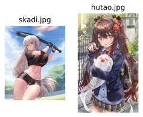

imgutils.generic.multilabel_timm
Multi-Label TIMM Model Module
This module provides functionality for working with multi-label image classification models trained with TIMM (PyTorch Image Models) and exported to ONNX format. It includes:
The MultiLabelTIMMModel class for loading and making predictions with models hosted on Hugging Face Hub
Functions for batch prediction and demo interface creation
Support for custom thresholds at both category and tag levels
Flexible output formatting options for different use cases
The models are expected to be stored on Hugging Face Hub with specific files:
model.onnx: The ONNX model file
selected_tags.csv: CSV file containing tag information and categories
preprocess.json: JSON configuration for image preprocessing
thresholds.csv: Optional CSV file with recommended thresholds
categories.json: Category ID and name mapping json file.
This module is designed to work with multi-label classification tasks where images can belong to multiple categories and have multiple tags within each category.
MultiLabelTIMMModel
- class imgutils.generic.multilabel_timm.MultiLabelTIMMModel(repo_id: str, hf_token: str | None = None)[source]
A class for working with multi-label image classification models trained with TIMM.
This class handles loading models from Hugging Face Hub, preprocessing images, and making predictions with customizable thresholds.
- Parameters:
repo_id (str) – The Hugging Face Hub repository ID containing the model
hf_token (Optional[str]) – Optional Hugging Face authentication token for private repositories
- __init__(repo_id: str, hf_token: str | None = None)[source]
Initialize a MultiLabelTIMMModel.
- Parameters:
repo_id (str) – The Hugging Face Hub repository ID containing the model
hf_token (Optional[str]) – Optional Hugging Face authentication token for private repositories
- launch_demo(default_thresholds: float | Dict[Any, float] | None = None, default_use_tag_thresholds: bool = True, server_name: str | None = None, server_port: int | None = None, **kwargs)[source]
Launch a Gradio demo for the model.
- Parameters:
default_thresholds (Union[float, Dict[Any, float]]) – Default threshold values to use in the demo
default_use_tag_thresholds (bool) – Whether to use tag-level thresholds by default
server_name (Optional[str]) – Server name for the Gradio app
server_port (Optional[int]) – Server port for the Gradio app
kwargs (Any) – Additional keyword arguments to pass to gr.launch()
- Returns:
None
- Raises:
EnvironmentError – If Gradio is not installed
- make_ui(default_thresholds: float | Dict[Any, float] | None = None, default_use_tag_thresholds: bool = True)[source]
Create a Gradio UI for the model.
- Parameters:
default_thresholds (Union[float, Dict[Any, float]]) – Default threshold values to use in the UI
default_use_tag_thresholds (bool) – Whether to use tag-level thresholds by default
- Returns:
None
- Raises:
EnvironmentError – If Gradio is not installed
- predict(image: str | ~os.PathLike | bytes | bytearray | ~typing.BinaryIO | ~PIL.Image.Image, preprocessor: ~typing.Literal['test', 'val'] = 'test', thresholds: float | ~typing.Dict[~typing.Any, float] | None = None, use_tag_thresholds: bool = True, fmt=<object object>)[source]
Make a prediction and format the results.
This method processes an image through the model and applies thresholds to determine which tags to include in the results. The output format can be customized using the fmt parameter.
- Parameters:
image (ImageTyping) – The input image
preprocessor (Literal['test', 'val']) – Which preprocessor to use (‘test’ or ‘val’)
thresholds (Union[float, Dict[Any, float]]) – Threshold values for tag confidence. Can be a single float applied to all categories or a dictionary mapping category IDs or names to threshold values
use_tag_thresholds (bool) – Whether to use tag-level thresholds if available
fmt (Any) – Output format specification. Can be a tuple of category names to include, or FMT_UNSET to use all categories
- Returns:
Formatted prediction results according to the fmt parameter
- Return type:
Any
Note
The fmt argument can include the following keys:
Category names: dicts containing category-specific tags and their confidences
tag: a dict containing all tags across categories and their confidencesembedding: a 1-dim embedding of image, recommended for index building after L2 normalizationlogits: a 1-dim logits result of imageprediction: a 1-dim prediction result of image
You can extract specific category predictions or all tags based on your needs.
For more details see documentation of
multilabel_timm_predict().
multilabel_timm_predict
- imgutils.generic.multilabel_timm.multilabel_timm_predict(image: str | ~os.PathLike | bytes | bytearray | ~typing.BinaryIO | ~PIL.Image.Image, repo_id: str, preprocessor: ~typing.Literal['test', 'val'] = 'test', thresholds: float | ~typing.Dict[~typing.Any, float] | None = None, use_tag_thresholds: bool = True, fmt=<object object>, hf_token: str | None = None)[source]
Make predictions using a multi-label TIMM model.
This function provides a convenient interface for making predictions with models hosted on Hugging Face Hub without directly instantiating a MultiLabelTIMMModel.
- Parameters:
image (ImageTyping) – The input image
repo_id (str) – The Hugging Face Hub repository ID containing the model
preprocessor (Literal['test', 'val']) – Which preprocessor to use (‘test’ or ‘val’)
thresholds (Union[float, Dict[Any, float]]) – Threshold values for tag confidence. Can be a single float applied to all categories or a dictionary mapping category IDs or names to threshold values
use_tag_thresholds (bool) – Whether to use tag-level thresholds if available
fmt (Any) – Output format specification. Can be a tuple of category names to include, or FMT_UNSET to use all categories
hf_token (Optional[str]) – Optional Hugging Face authentication token for private repositories
- Returns:
Formatted prediction results according to the fmt parameter
- Return type:
Any
- Example:
Here are some images for example
>>> from imgutils.generic import multilabel_timm_predict >>> >>> general, character, rating = multilabel_timm_predict( ... 'skadi.jpg', ... repo_id='animetimm/mobilenetv3_large_150d.dbv4-full', ... ) >>> general {'1girl': 0.9963783025741577, 'long_hair': 0.9685494899749756, 'solo': 0.9548443555831909, 'navel': 0.9415484666824341, 'breasts': 0.9369214177131653, 'red_eyes': 0.9019639492034912, 'shirt': 0.873087465763092, 'outdoors': 0.866461992263794, 'crop_top': 0.862577497959137, 'midriff': 0.8544420003890991, 'sportswear': 0.849435567855835, 'shorts': 0.8209151029586792, 'short_sleeves': 0.817188560962677, 'holding': 0.811793327331543, 'very_long_hair': 0.8082301616668701, 'gloves': 0.7840366363525391, 'black_gloves': 0.7765430808067322, 'thighs': 0.7542579770088196, 'looking_at_viewer': 0.7331588268280029, 'day': 0.7203925251960754, 'hair_between_eyes': 0.7121687531471252, 'large_breasts': 0.6990523338317871, 'baseball_bat': 0.6809443831443787, 'grey_hair': 0.6790007948875427, 'sky': 0.6716539263725281, 'stomach': 0.6698249578475952, 'sweat': 0.6454322934150696, 'black_shirt': 0.6270318031311035, 'cowboy_shot': 0.6216483116149902, 'blue_sky': 0.5898874998092651, 'black_shorts': 0.5445142984390259, 'holding_baseball_bat': 0.5013713836669922, 'white_hair': 0.4999670684337616, 'blush': 0.4860053062438965, 'cloud': 0.474183052778244, 'standing': 0.4724341332912445, 'thigh_gap': 0.4330931305885315, 'short_shorts': 0.39793258905410767, 'parted_lips': 0.36694538593292236, 'crop_top_overhang': 0.3321989178657532, 'official_alternate_costume': 0.3157039284706116, 'blurry': 0.24181532859802246, 'groin': 0.21906554698944092, 'ass_visible_through_thighs': 0.2188207507133484, 'cropped_shirt': 0.18700966238975525, 'taut_shirt': 0.08612403273582458, 'taut_clothes': 0.0701744556427002} >>> character {'skadi_(arknights)': 0.9796262979507446} >>> rating {'sensitive': 0.9580697417259216} >>> >>> general, character, rating = multilabel_timm_predict( ... 'hutao.jpg', ... repo_id='animetimm/mobilenetv3_large_150d.dbv4-full', ... ) >>> general {'1girl': 0.988956093788147, 'twintails': 0.9650213718414307, 'ghost': 0.940951943397522, 'tongue_out': 0.9330000877380371, 'tongue': 0.9267600774765015, 'skirt': 0.9194451570510864, 'symbol-shaped_pupils': 0.9103127717971802, 'brown_hair': 0.9067947268486023, 'long_hair': 0.8872615098953247, 'red_eyes': 0.8631541728973389, 'looking_at_viewer': 0.8235997557640076, 'solo': 0.8214132785797119, 'long_sleeves': 0.7965610027313232, 'bag': 0.7958617210388184, 'jacket': 0.7932659387588501, 'flower-shaped_pupils': 0.7630170583724976, 'shirt': 0.7500981092453003, 'hair_ornament': 0.738053023815155, 'flower': 0.7321316599845886, 'plaid_skirt': 0.7173646688461304, 'white_shirt': 0.6631225347518921, 'pleated_skirt': 0.6344470977783203, 'hair_flower': 0.6293849945068359, 'nail_polish': 0.6136130094528198, 'multicolored_hair': 0.5703858733177185, 'blush': 0.5195141434669495, 'plaid_clothes': 0.503984808921814, 'gradient_hair': 0.49658203125, 'alternate_costume': 0.4947473704814911, ':p': 0.493851900100708, 'hair_between_eyes': 0.484821081161499, 'smile': 0.4778161942958832, 'black_nails': 0.4747253358364105, 'collared_shirt': 0.46951043605804443, 'outdoors': 0.46920245885849, 'holding': 0.45227500796318054, 'school_uniform': 0.4197554290294647, 'very_long_hair': 0.41959843039512634, 'miniskirt': 0.3916422426700592, 'cowboy_shot': 0.38207799196243286, 'blue_jacket': 0.3614964485168457, 'sleeves_past_wrists': 0.3611966073513031, 'backpack': 0.32487112283706665, 'colored_tips': 0.314140260219574, 'sidelocks': 0.3062695264816284, 'black_jacket': 0.299169659614563, 'standing': 0.29005059599876404, 'charm_(object)': 0.22183549404144287, 'multiple_rings': 0.2172674536705017, 'open_jacket': 0.2046721875667572, 'ring': 0.18625634908676147, 'brown_skirt': 0.18045437335968018, 'contemporary': 0.13890522718429565} >>> character {'hu_tao_(genshin_impact)': 0.9779937267303467, 'boo_tao_(genshin_impact)': 0.8973554372787476} >>> rating {'general': 0.6215817332267761, 'sensitive': 0.3872501254081726}
Note
For different models, the default format is different. That depends on the categories that model supported.
For example, for model animetimm/mobilenetv3_large_150d.dbv4-full-witha
>>> from imgutils.generic import multilabel_timm_predict >>> >>> general, artist, character, rating = multilabel_timm_predict( ... 'skadi.jpg', ... repo_id='animetimm/mobilenetv3_large_150d.dbv4-full-witha', ... ) >>> general {'1girl': 0.9938606023788452, 'long_hair': 0.9691187143325806, 'red_eyes': 0.9463587403297424, 'solo': 0.944723904132843, 'navel': 0.9439248442649841, 'breasts': 0.9335891008377075, 'sportswear': 0.8865424394607544, 'shorts': 0.8601726293563843, 'very_long_hair': 0.8445472717285156, 'outdoors': 0.83197021484375, 'midriff': 0.8274217247962952, 'shirt': 0.8188955783843994, 'short_sleeves': 0.8183804750442505, 'crop_top': 0.8089936971664429, 'gloves': 0.8038264513015747, 'black_gloves': 0.7703496813774109, 'thighs': 0.7689077854156494, 'holding': 0.768336832523346, 'looking_at_viewer': 0.739115834236145, 'large_breasts': 0.7282243967056274, 'sky': 0.6852632761001587, 'hair_between_eyes': 0.6799711585044861, 'stomach': 0.6694454550743103, 'baseball_bat': 0.6693665385246277, 'black_shorts': 0.6493985652923584, 'day': 0.6425715684890747, 'cowboy_shot': 0.6186742186546326, 'black_shirt': 0.5906491279602051, 'holding_baseball_bat': 0.5860112905502319, 'sweat': 0.5825777649879456, 'cloud': 0.5549533367156982, 'blue_sky': 0.5523971915245056, 'white_hair': 0.5324308276176453, 'grey_hair': 0.52657151222229, 'short_shorts': 0.4896492063999176, 'standing': 0.45526784658432007, 'parted_lips': 0.4306206703186035, 'blush': 0.4149143397808075, 'thigh_gap': 0.4124316871166229, 'ass_visible_through_thighs': 0.34030789136886597, 'artist_name': 0.2679593563079834, 'groin': 0.2652612328529358, 'blurry': 0.2548949122428894, 'baseball': 0.24870169162750244, 'crop_top_overhang': 0.2240566909313202, 'stretching': 0.2012709677219391, 'cropped_shirt': 0.19828352332115173, 'official_alternate_costume': 0.1960265338420868, 'toned': 0.13941210508346558, 'exercising': 0.11270403861999512, 'lens_flare': 0.10835999250411987, 'taut_clothes': 0.08783495426177979, 'taut_shirt': 0.08448180556297302, 'linea_alba': 0.06583884358406067} >>> artist {} >>> character {'skadi_(arknights)': 0.8951651453971863} >>> rating {'sensitive': 0.9492285847663879}
Its default fmt is
('general', 'artist', 'character', 'rating').But you can easily get those information you need with a more controllable way with
fmt. See the next note.Note
The
fmtargument can include the following keys:Category names: dicts containing category-specific tags and their confidences
tag: a dict containing all tags across categories and their confidencesembedding: a 1-dim embedding of image, recommended for index building after L2 normalizationlogits: a 1-dim logits result of imageprediction: a 1-dim prediction result of image
You can extract specific category predictions or all tags based on your needs.
>>> from imgutils.generic import multilabel_timm_predict >>> >>> # default usage >>> general, character, rating = multilabel_timm_predict( ... 'skadi.jpg', ... repo_id='animetimm/mobilenetv3_large_150d.dbv4-full', ... ) >>> general {'1girl': 0.9963783025741577, 'long_hair': 0.9685494899749756, 'solo': 0.9548443555831909, 'navel': 0.9415484666824341, 'breasts': 0.9369214177131653, 'red_eyes': 0.9019639492034912, 'shirt': 0.873087465763092, 'outdoors': 0.866461992263794, 'crop_top': 0.862577497959137, 'midriff': 0.8544420003890991, 'sportswear': 0.849435567855835, 'shorts': 0.8209151029586792, 'short_sleeves': 0.817188560962677, 'holding': 0.811793327331543, 'very_long_hair': 0.8082301616668701, 'gloves': 0.7840366363525391, 'black_gloves': 0.7765430808067322, 'thighs': 0.7542579770088196, 'looking_at_viewer': 0.7331588268280029, 'day': 0.7203925251960754, 'hair_between_eyes': 0.7121687531471252, 'large_breasts': 0.6990523338317871, 'baseball_bat': 0.6809443831443787, 'grey_hair': 0.6790007948875427, 'sky': 0.6716539263725281, 'stomach': 0.6698249578475952, 'sweat': 0.6454322934150696, 'black_shirt': 0.6270318031311035, 'cowboy_shot': 0.6216483116149902, 'blue_sky': 0.5898874998092651, 'black_shorts': 0.5445142984390259, 'holding_baseball_bat': 0.5013713836669922, 'white_hair': 0.4999670684337616, 'blush': 0.4860053062438965, 'cloud': 0.474183052778244, 'standing': 0.4724341332912445, 'thigh_gap': 0.4330931305885315, 'short_shorts': 0.39793258905410767, 'parted_lips': 0.36694538593292236, 'crop_top_overhang': 0.3321989178657532, 'official_alternate_costume': 0.3157039284706116, 'blurry': 0.24181532859802246, 'groin': 0.21906554698944092, 'ass_visible_through_thighs': 0.2188207507133484, 'cropped_shirt': 0.18700966238975525, 'taut_shirt': 0.08612403273582458, 'taut_clothes': 0.0701744556427002} >>> character {'skadi_(arknights)': 0.9796262979507446} >>> rating {'sensitive': 0.9580697417259216} >>> >>> # get rating and character only >>> rating, character = multilabel_timm_predict( ... 'skadi.jpg', ... repo_id='animetimm/mobilenetv3_large_150d.dbv4-full', ... fmt=('rating', 'character'), ... ) >>> rating {'sensitive': 0.9580697417259216} >>> character {'skadi_(arknights)': 0.9796262979507446} >>> >>> # get embeddings only >>> embedding = multilabel_timm_predict( ... 'skadi.jpg', ... repo_id='animetimm/mobilenetv3_large_150d.dbv4-full', ... fmt='embedding', ... ) >>> embedding.dtype, embedding.shape (dtype('float32'), (1280,))